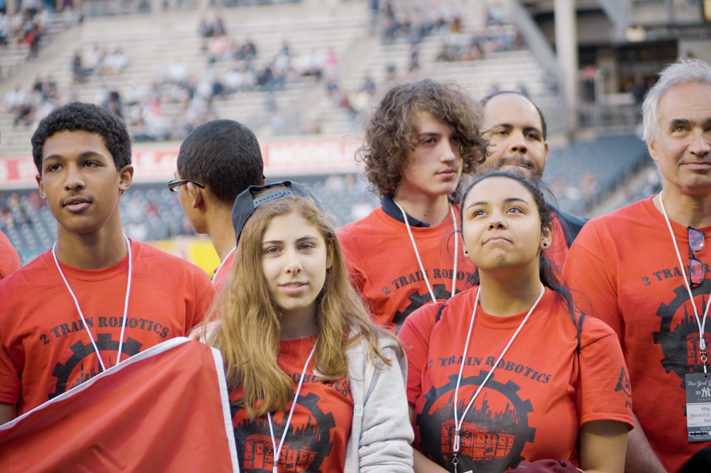

Video, Graphic Design, Media Case Study
2 Train Robotics (2016-17)
Founded media team and served as media director, leading production of several videos and revamping of branding and social media/website.
From 2train395.com:
We are a FIRST® Robotics Competition team based at Columbia University and comprised of students from both Morris High School Campus in Morrisania and Columbia Secondary School in Harlem.
I joined 2 Train in September 2016. I worked with another team member to film and edit out crowdfunding video. I founded the media team, dedicated to documenting the season through video, working on any parts of the competition that required media, and running social media for outreach and seeking sponsors. Under my leadership, the team was able to compete in the Chairman's Competition for the first time in several years, and underwent a website redesign and branding revamps.
Gallery: Cinematography



Gallery: Motion Graphics